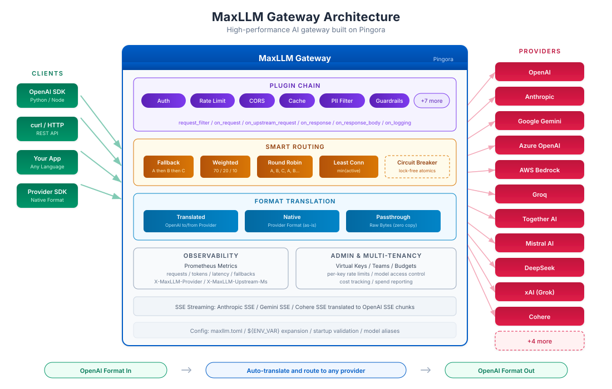

Zero API changes
Keep using OpenAI SDKs—MaxLLM translates requests to native providers and back.
MaxLLM · 📡 Rust + Pingora
MaxLLM keeps your OpenAI clients intact while routing traffic to any provider, applying plugins, guardrails, and multi-tenant controls—all inside a single Pingora-powered reverse proxy.
15 providers
All the big namesOpenAI, Anthropic, Gemini, Ollama, Cohere, Bedrock, xAI, and any OpenAI-compatible host.
7 crates
Modular RustConfig, plugin, translate, admin, and gateway crates keep concerns clean.
13 plugins
Extensible hooksAuth, rate limits, CORS, caching, guardrails, and more in one chain.
Keep using OpenAI SDKs—MaxLLM translates requests to native providers and back.
Fallback chains, weighted and round-robin balancing, least-connections, and lock-free circuit breakers keep traffic flowing.
Prompt guards, keyword blocks, secret scanning, regex rules, and external webhooks apply before requests leave the gateway.
Multi-tenant keys, per-key budgets, rate limits, cost tracking, and Prometheus metrics shipped out of the box.
Pull `chaitanyadev14/maxllm:latest`, mount `maxllm.toml`, and inject provider API keys via env vars.
cargo build --release
./target/release/maxllm init
./target/release/maxllm startUse the CLI for status, config dumps, and virtual key management.
cargo build --release
./target/release/maxllm-server --config maxllm.tomlRun the server binary directly when you need ultra-low-latency control.
| Provider | Mode | Auth |
|---|---|---|
| OpenAI | OpenAI-compatible | Bearer token |
| Anthropic | Translation → Messages API | x-api-key |
| Google Gemini | Translation → generateContent | API key query |
| Azure OpenAI | Passthrough | api-key header |
| AWS Bedrock | Anthropic format | AWS SigV4 |
| Groq, Together, Fireworks, DeepInfra, Mistral, xAI, DeepSeek, Cohere, Ollama | OpenAI-compatible | Bearer token / local |
| Custom | OpenAI-compatible | Configurable |
Configure each provider in `maxllm.toml`, declare defaults, and alias models (e.g., `"gpt-4" = "gpt-4o"`).
Define translated, native, or passthrough paths with plugins, guardrails, timeouts, and fallbacks per route.
Global hooks such as `request_id`, `api_auth`, rate limiting, caching, and PII detection can be wired per route.
Battle-tested providers like prompt guard, keyword block, regex guard, Lakera, and programmable CEL policies drop into every route.
Admin API generates `sk-maxllm-{uuid}` keys with teams, per-key budgets, and rate limits.
Automatic per-key, per-provider, per-model spend tracking with `/admin/spend` reports.
Prometheus metrics plus response headers (`X-MaxLLM-Provider`, `X-MaxLLM-Overhead-Ms`, etc.).
Pingora handles TCP/TLS while MaxLLM focuses on translation, routing, and policy enforcement.

178k req/sec on `/health` with 980µs average latency; 71k req/sec proxying to a mock upstream.
33.8× more requests/sec with 36× lower latency on identical hardware. Benchmarks live in
BENCHMARKS.md.
Targets are exposed via the Makefile (build, run, dev, test, perf). Lints and checks keep the 257 tests and 44/44 bug hunt clean.
Need help? Run `make dev` locally, peek at `maxllm.toml`, and drop config questions in the repo issues.